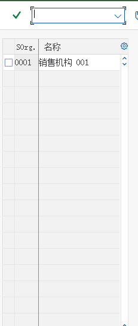

組織構造：まずデータに座標を与える
企業構造 · 販売構造 · 出荷構造 · 割当関係 · 実機のシステム画面
1. なぜ組織を先に説明するのか
以降のすべてが組織に紐づくからです：得意先マスタには販売エリアを入力し、品目の販売ビューにも販売エリアを入力します。条件レコードには販売組織/流通チャネルを入力し、受注伝票のヘッダには販売エリアを引き継ぎ、出荷ではプラントと出荷ポイントを選択します。組織構造が 1 層でもずれると、以降のデータはすべて作り直しになります。
2. 全体図

A. 企業構造（Enterprise Structure）
| 対象 | 意味 | SD での役割 | 教材のシナリオ |
|---|---|---|---|
| 会社コード / 会社 | 対外財務諸表を作成する会計単位 | 販売業務がどの会計に載るかを決定（収益・売掛金はすべてこの会社コード内） | 一対多：1 つの会社コードに複数の販売組織を持てます |
| 販売組織 Sales Organization | 販売を担当する法的単位：製品責任、販売統計 | 販売データの最上位組織キー。得意先／品目の販売ビューはこれに紐づきます | 教材：颐宁販売組織 |
| プラント Plant | 生産と在庫の単位（出荷はここから発生する） | 受注明細のプラントが出荷元と在庫の出所を決定する | 教材：颐宁机械工厂 を直販と卸売の2つの流通チャネルに割当 |
企业结构 → 定义 → 销售和分销 → 定义、复制、删除、检查销售组织下の画面は教材の「販売組織の定義」の実際の画面です：まずカスタマイジングのメニューから入り、「販売組織の定義」をダブルクリックします。
{kind=link}


B. 販売構造（Sales Structure）
| 対象 | 意味 | 教材でのやり方 | スクリーンショットの次のステップ |
|---|---|---|---|
| 流通チャネル Distribution Channel | 製品がどの経路で得意先に届くか：直販 / 卸売 / 小売 | 2 つ定義（直販、卸売） | 販売組織への割当 |
| 製品部門 Division | 製品をライン別にグループ化（完成品 / スペアパーツ / サービス） | 2 つ定義 | 販売組織への割当 |
| 販売事務所 Sales Office | 地域や責任で区分された販売機関 | 定義後に販売エリアへ割当 | 統計と権限に使用 |
| 販売グループ Sales Group | 販売事務所の中の担当者グループ | 定義後に販売事務所へ割当 | 責任をさらに細分化 |
企业结构 → 定义 → 销售和分销 → 定义、复制、删除、检查分销渠道

企业结构 → 定义 → 销售和分销 → 维护销售办公室 ｜ 企业结构 → 定义 → 销售和分销 → 维护销售组

C. 販売エリア（Sales Area）—— SD の座標
販売エリア = 販売組織 + 流通チャネル + 製品部門。業務上の意味：ある販売組織が「ある流通チャネルを通じて」「特定の製品部門」を扱います。得意先マスタ、品目の販売ビュー（販売エリアレベルのデータ）、条件レコード、販売伝票のヘッダを決定します。
「SAP は販売組織・流通チャネル・製品部門の組み合わせを『販売エリア』と呼びます……颐宁の販売組織では、直販と卸売の 2 つの製品部門による販売を割り当てることができ、全部で 4 つの販売エリアになります。」
→ 1 × 2 × 2 = 4 つの販売エリアとなり、1 つずつ設定する必要があります。
企业结构 → 分配 → 销售和分销 → 设置销售范围

コースシナリオ（教材環境）に実在する値
以下の値は教材画面の表から一字ずつ読み取ったものです（スクリーンショットの説明には「コースシナリオ値」と記載されています）。授業ではこれをそのまま使って、受講者自身のシステムのデータと照合できます。
| 対象 | 値 | 説明 |
|---|---|---|
| 販売組織 | C999 颐宁销售 | 教材環境の販売組織コード |
| 流通チャネル | Z1 直販 / Z2 卸売 | 2 つのチャネル |
| 製品部門 | Z1 铸钢泵 / Z2 增压泵 | 2 つの製品部門 |
| 販売エリア（4 つの組み合わせ） | C999/Z1/Z1、C999/Z2/Z1、C999/Z1/Z2、C999/Z2/Z2 | 「販売エリアの設定」画面の 4 行（画面 7） |
| プラント | P999 颐宁机械工厂 | C999 に割り当てられた Z1、Z2 の 2 チャネル |
| 出荷ポイント | Z999 颐宁装运点 | プラント P999 に割当 |
| ピッキング保管場所 | Z999 + P999 → 保管場所 003 | 「ピッキング場所の割当」画面の 1 行 |
C999 / Z999 / P999 のような練習用コード を使っており、実際の得意先では 1000、1010（数字）や得意先が独自に作成した Z コードが一般的です。コードを暗記するのではなく、「このコードが組織図のどこに位置するか」を見られるようにしましょう。D. 出荷構造（Shipping）
| 対象 | 何を決定するか | 関係 | 教材の実例 |
|---|---|---|---|
| 出荷ポイント Shipping Point | どの地点から出荷するか（出荷の起点） | プラントとは多対多 | Z999 颐宁装运点 |
| 積込ポイント Loading Point | 積み込みの具体的な位置 | 出荷ポイントに紐付け | 積込ポイントを定義後、必要に応じて割当 |
| ピッキング保管場所 | どの保管場所からピッキングするか | 出荷ポイント + プラント + 保管条件で決定 | 教材では最初の2つの条件のみ有効化 |
| 輸送条件 Shipping Conditions | 輸送手段と時間 | 品目 / プラントとともに出荷ポイントを決定 | 得意先マスタと品目マスタの両方にあります |
| 積込グループ Loading Group | 積込ポイントを決定 | 品目マスタと併用 | 品目マスタで登録 |
企业结构 → 定义 → 后勤执行 → 定义、复制、删除、检查起运点教材では出荷ポイントの名称はZ999 颐宁装运点（画面で確認できます）で、その後プラントに割り当てます：


后勤执行 → 装运 → 拣配 → 确定拣配地点 → 分配拣配地点
E. 割当関係一覧（1 つの表で多対多を説明）
| 割当 | 関係 | 教材でのやり方 | IMG パス |
|---|---|---|---|
| 販売組織 → 会社コード | 多対一 | 販売組織を会社コードに割り当てる | 企業構造 → 割当 → 販売管理 → 会社コードへの販売組織割当 |
| 流通チャネル → 販売組織 | 多対多 | 直販と卸売はどちらも颐宁販売組織に割り当てる | 企業構造 → 割当 → 販売管理 → 販売組織への流通チャネル割当 |
| 製品部門 → 販売組織 | 多対多 | 2 つの製品部門をどちらも割当 | 企業構造 → 割当 → 販売管理 → 販売組織への部門割当 |
| 販売エリア | 3 つのキーの組み合わせで決定 | 計 4 つの組み合わせ | 企業構造 → 割当 → 販売管理 → 販売エリアの設定 |
| 販売事務所 → 販売エリア | 多対多 | 地域単位で紐付け | 企業構造 → 割当 → 販売管理 → 販売エリアへの販売事務所割当 |
| 販売グループ → 販売事務所 | 多対多 | グループ単位で紐付け | 企業構造 → 割当 → 販売管理 → 販売事務所への販売グループ割当 |
| プラント → 販売組織 / 流通チャネル | 多対多 | 颐宁机械工厂 → 直販 + 卸売 | 企業構造 → 割当 → 販売管理 → 販売組織-流通チャネル-プラントの割当 |
| 出荷ポイント → プラント | 多対多 | 1 つのプラントに複数の出荷ポイント（道路、水路…）を持て、1 つの出荷ポイントを複数のプラントで共用することもできます | 企業構造 → 割当 → ロジスティクス実行 → プラントへの出荷ポイント割当 |
| ピッキング保管場所 | 出荷ポイント + プラント（+ 保管条件）で決定 | 最初の 2 つの条件だけを有効化 | ロジスティクス実行 → 出荷 → ピッキング → ピッキング場所の決定 → ピッキング場所の割当 |
F. 実機画面：組織を構築する 12 のタスク（索引）
以下は教材 SD モジュールの「組織構造」に属するタスク一覧です（パスとタスク番号は教材と一致。原文で照合できます）。完全なステップごとの手順は設定ページを参照してください。
| タスク | タイトル | 教材 IMG パス | 画面の数 |
|---|---|---|---|
| タスク 01 | 販売組織の定義 | 企業構造 → 定義 → 販売管理 → 販売組織の登録、コピー、削除、チェック | 6 |
| タスク 02 | 流通チャネルの定義 | 企業構造 → 定義 → 販売管理 → 流通チャネルの登録、コピー、削除、チェック | 4 |
| タスク 03 | 製品部門の定義 | 企業構造 → 定義 → ロジスティクス一般 → 製品部門の登録、コピー、削除、チェック | 4 |
| タスク 04 | 販売組織の会社コードへの割当 | 企業構造 → 割当 → 販売管理 → 会社コードへの販売組織割当 | 3 |
| タスク 05 | 流通チャネルの販売組織への割当 | 企業構造 → 割当 → 販売管理 → 販売組織への流通チャネル割当 | 6 |
| タスク 06 | 製品部門の販売組織への割当 | 企業構造 → 割当 → 販売管理 → 販売組織への部門割当 | 3 |
| タスク 07 | 販売エリアの設定 | 企業構造 → 割当 → 販売管理 → 販売エリアの設定 | 4 |
| タスク 08 | 販売事務所の定義 | 企業構造 → 定義 → 販売管理 → 販売事務所の登録 | 5 |
| タスク 09 | 販売グループの定義 | 企業構造 → 定義 → 販売管理 → 販売グループの登録 | 5 |
| タスク 10 | 販売エリアへの販売事務所割当 | 企業構造 → 割当 → 販売管理 → 販売エリアへの販売事務所割当 | 5 |
| タスク 12 | 販売グループの販売事務所への割当 | 企業構造 → 割当 → 販売管理 → 販売事務所への販売グループ割当 | 4 |
| タスク 13 | プラントの販売組織／流通チャネルへの割当 | 企業構造 → 割当 → 販売管理 → 販売組織-流通チャネル-プラントの割当 | 5 |
G. セルフチェック：自分のシステムではどう確認するか
| 確認すべきこと | どう確認するか |
|---|---|
| どの販売組織、流通チャネル、製品部門があるか | カスタマイジングで企業構造を直接確認します。またはテーブル TVKO（販売組織）、TVTW（流通チャネル）、TSPA（製品部門） |
| 販売エリアはどれを作成したか | カスタマイジングの「販売エリアの設定」一覧。または VA03 の任意の受注伝票ヘッダで販売エリア項目を確認 |
| プラントはどの販売組織に割り当てられているか | カスタマイジングの「販売組織-流通チャネル-プラントの割当」。または受注明細でプラントと「出荷ポイント」を確認 |
| 出荷ポイント / ピッキング保管場所 | カスタマイジングの「プラントへの出荷ポイント割当」「ピッキング場所の割当」。または納入伝票 VL03N のヘッダで出荷ポイントを確認 |
| 項目の意味が不明なとき | カーソルを項目に合わせてF1 を押します。値一覧はF4 です |